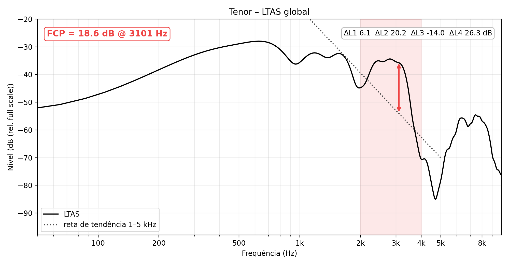
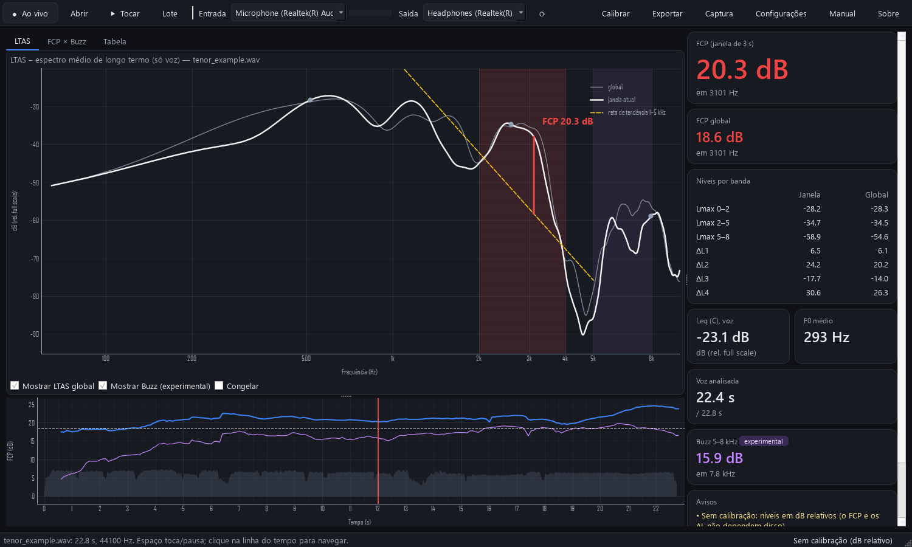
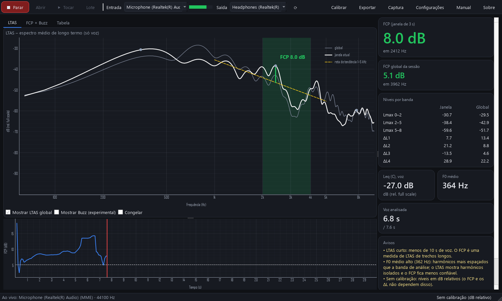

Tiago Lima Bicalho Cruz · versão 2.0.0 · novembro de 2026
O FCP Live Analyzer mede, ao vivo ou em arquivos, a Formant Cluster Prominence (FCP): quanto o agrupamento das ressonâncias R3–R5 (o "formante do cantor") se destaca no espectro médio de longo termo (LTAS) da voz. O programa segue a definição de Lã, Silva e Granqvist (2023) e mostra também as medidas de banda do mesmo artigo (Lmax e ΔL1–ΔL4).

| Medida | Definição (Lã et al., 2023) |
|---|---|
| LTAS | Espectro médio de longo termo, só dos trechos vozeados. Janela Hanning, largura de banda de 350 Hz, média em potência. |
| Reta de tendência | Reta ajustada ao LTAS entre 1 e 5 kHz, linear em log da frequência (é reta no eixo logarítmico, como nas figuras do artigo). |
| FCP | Maior diferença entre o LTAS e a reta, dentro de 2–4 kHz. A frequência onde ela ocorre também é informada. |
| Lmax(0–2), Lmax(2–5), Lmax(5–8) | Nível máximo do LTAS em cada banda (kHz). |
| ΔL1 | Lmax(0–2) − Lmax(2–5) (índice de Hammarberg) |
| ΔL2 | Lmax(2–5) − Lmax(5–8) |
| ΔL3 | ΔL1 − ΔL2 |
| ΔL4 | Lmax(0–2) − Lmax(5–8) |
| Leq (C) | Nível equivalente com ponderação C, só da voz. Em dB SPL se o sistema estiver calibrado. |
| Buzz (experimental) | Medida própria do autor, não validada na literatura: percentil 90 do LTAS na faixa do Buzz (5–8 kHz por padrão) menos a reta de tendência avaliada em 5 kHz. |
Valores de referência publicados (Lã et al., 2023): leitura em voz alta ≈ 4–5 dB; Fado-Canção cantado ≈ 10 dB (de 3,7 a 14,3 dB entre cantores); dois barítonos líricos 14,8 e 20 dB.
Importante. O FCP é uma medida de LTAS. Os autores afirmam que ele não se aplica a vogais sustentadas. Use trechos de canto corrido, de preferência com pelo menos 10 s de voz.
FCP_Live_Analyzer_2.0.0_win64.zip e abra
FCP_Live_Analyzer\FCP_Live_Analyzer.exe. Não precisa instalar o Python.pip install -r requirements.txt e depois python main.py.
Também dá para abrir um arquivo direto: python main.py gravacao.wav.Formatos aceitos: WAV, FLAC, AIFF, OGG e MP3. Arquivos estéreo são convertidos em mono pela média dos canais. Para medir até 8 kHz, use taxa de amostragem de 16 kHz ou mais (44,1 ou 48 kHz recomendados).

As cores do FCP (azul < 5, verde 5–10, laranja 10–15, vermelho ≥ 15 dB) são faixas visuais escolhidas a partir dos valores do artigo. Não são limiares validados de "presença" do formante do cantor.
Atalhos: Espaço toca/pausa, ←/→ volta/avança 1 s, Home volta ao início, Ctrl+O abre, Ctrl+L ao vivo, Ctrl+B lote, Ctrl+E exporta, F1 manual. Também dá para arrastar um arquivo para a janela.

take.wav, analisada de novo com o mesmo motor do modo arquivo
e exportada para uma pasta Live_AAAAMMDD_HHMMSS. A gravação fica aberta para revisão sincronizada.Os trechos sem voz (silêncio, consoantes surdas, respiração) são descartados automaticamente, como no artigo.
Clique em Lote e selecione vários arquivos. O programa cria uma pasta Batch_AAAAMMDD_HHMMSS com:
batch_summary.csv: uma linha por arquivo, com os valores globais;batch_windows.csv: todas as janelas de todos os arquivos;summary.csv, windows.csv, ltas_global.csv e os gráficos
ltas_global.png, fcp_timeline.png e fcp_vs_buzz.png.Um arquivo com erro não interrompe o lote: a linha dele traz ERROR na coluna warnings.
O FCP e os ΔL são diferenças de nível e não dependem de calibração. Calibre apenas se quiser LTAS e Leq em dB SPL, como no artigo:
A calibração fica salva e vale só para o mesmo microfone e ganho. O programa avisa se você trocar de entrada. Sem calibração, os níveis aparecem como "dB (rel. full scale)".
| Opção | Padrão | Comentário |
|---|---|---|
| Motor do LTAS | Tipo Sopran | Hann com largura de banda de 350 Hz e média em potência; curva contínua (pontos a cada ~20 Hz). |
| Tipo Praat | Quadros de 40 ms, média em potência e média da densidade em faixas de 350 Hz, como o To Ltas do Praat (validado contra o Praat). |
|
| Largura de banda | 350 Hz | Valor do artigo. |
| Definição da banda | −6 dB | Janela Hann de 2·fs/B amostras (5,714 ms a 350 Hz), exatamente a janela que o Sopran mostra. Alternativas: −3 dB e ENBW. |
| Pontos usados nas medidas | Grade do Sopran | O FCP, a reta e os Lmax são calculados nos mesmos pontos de frequência do Sopran (FFT de 256 pontos a 44,1 kHz, ~172 Hz), o que reproduz os números do Sopran. A "grade fina" (~20 Hz) acha o máximo com mais precisão, mas pode dar alguns décimos de dB a mais. A curva desenhada é sempre a fina. |
| Janela do FCP dinâmico | 3 s | Só afeta a curva no tempo; o valor global usa o arquivo inteiro. |
| Só trechos vozeados | sim | Detector de F0 do Praat (60–1200 Hz). |
| Faixa do Buzz | 5–8 kHz | Também 4–8 e 5–9 kHz. |
| Idioma | inglês | Muda ao reabrir o programa. |
| Pasta de exportação | Documentos\FCP Live Analyzer\Exports |
summary.csv e batch_summary.csv (uma linha por arquivo):
| Coluna | Conteúdo |
|---|---|
duration_s, voiced_s |
Duração total e tempo de voz usado no LTAS |
level_unit |
Unidade dos níveis (dB SPL, dB SPL @30 cm ou relativo) |
Leq_C_voiced_dB, Leq_C_all_dB |
Leq com ponderação C da voz e do arquivo inteiro |
F0_mean_Hz, pitch_range_st |
F0 médio (geométrico) e faixa de F0 (percentis 10–90, semitons) |
FCP_dB, FCP_freq_Hz |
FCP e a frequência do máximo |
Peak_2_4_dB, Peak_2_4_freq_Hz |
Pico do LTAS em 2–4 kHz |
FCP_at_peak_v1_dB |
Definição antiga (pico menos reta no pico), só para comparação com a v1.x |
Trend_slope_dB_per_oct, Trend_intercept_dB |
Reta: nível = slope·log2(f) + intercept |
Lmax_0_2_dB, Lmax_2_5_dB, Lmax_5_8_dB |
Máximos por banda |
dL1_dB … dL4_dB |
ΔL1–ΔL4, com os sinais do artigo |
Buzz_experimental_dB, Buzz_experimental_freq_Hz |
Buzz (experimental) |
windows_n, windows_FCP_mean_dB, windows_FCP_sd_dB, windows_r_FCP_Buzz |
Estatísticas das janelas |
warnings, settings |
Avisos e todas as configurações usadas (JSON), para a análise ser reproduzível |
windows.csv tem as mesmas medidas por janela (t_start_s, t_end_s). ltas_global.csv traz o LTAS ponto
a ponto e a reta, prontos para abrir no Excel ou comparar com o Sopran. Os CSV usam vírgula como separador e
ponto decimal (no Excel em português, use Dados > De Texto/CSV).
| Aviso | O que significa |
|---|---|
| LTAS curto | Menos de 10 s de voz. O FCP fica sensível às vogais e notas do trecho. |
| Vogal/nota sustentada | A F0 quase não varia (menos de 2 semitons). O artigo diz que o FCP não se aplica a vogais sustentadas. |
| F0 médio alto | Acima de 350 Hz os harmônicos ficam mais espaçados que a banda de análise; o LTAS mostra harmônicos isolados (comum em sopranos). |
| Clipping | Mais de 0,1 % das amostras saturadas; os agudos ficam distorcidos. Reduza o ganho. |
| Taxa de amostragem baixa | Abaixo de 16 kHz, a banda de 5–8 kHz some (Lmax(5–8), ΔL2–ΔL4 e Buzz ficam vazios). |
| Sem calibração | Os níveis são relativos; FCP e ΔL continuam válidos. |
Outros cuidados: mantenha a distância e a posição do microfone, evite ruído de fundo e reverberação, compare tarefas parecidas (o FCP também varia com a intensidade e com o ΔL1) e não interprete diferenças de 1–2 dB entre dias sem repetir as medidas.
A pasta tests tem testes automáticos (rode python -m pytest tests). Entre eles:
To Ltas do próprio Praat;Comparação com o Sopran (o programa usado por Lã et al.). LTAS do arquivo inteiro no Sopran (Hanning, 350 Hz, janela de 5,7143 ms) e relatório de FCP do próprio Sopran, comparados com o app sem a remoção de trechos não vozeados (como foi feito no Sopran):
| Arquivo | FCP Sopran | FCP app | Inclinação Sopran | Inclinação app |
|---|---|---|---|---|
| ruído com cluster em 3 kHz | 10,15 dB | 10,16 dB | −11,488 dB/oit | −11,485 dB/oit |
| ruído sem cluster | 0,04 dB | 0,06 dB | −12,100 | −12,100 |
| tenor (exemplo) | 18,47 dB | 18,49 dB | −22,449 | −22,458 |
| rock (exemplo) | 2,93 dB | 2,95 dB | −9,206 | −9,207 |
A forma do LTAS coincide ponto a ponto (diferença menor que 0,6 dB de 0,3 a 8 kHz). Duas diferenças de
convenção, que não afetam FCP nem ΔL: (1) o Sopran mostra níveis 6,02 dB abaixo dos do app (o app usa o nível
de banda: um seno de −20 dBFS RMS lê −20 dB); (2) o Sopran rotula as frequências como k·fs/255 em vez de
k·fs/256, então a frequência do FCP aparece 0,4 % mais alta no Sopran (3112,9 Hz em vez de 3100,8 Hz).
Os dados e o script estão em validation/sopran e tools/compare_sopran.py; o teste tests/test_sopran.py
verifica essa concordância a cada versão.
| Item | v1.2.1 | v2.0 |
|---|---|---|
| Definição do FCP | Pico do LTAS em 2–4 kHz menos a reta nesse pico | Máximo de (LTAS − reta) em 2–4 kHz, como no artigo |
| LTAS | Média dos espectros em dB, máximo em faixas de 350 Hz | Média em potência com janela Hann de 350 Hz (ou faixas tipo Praat) |
| ΔL nos CSV | Sinais invertidos; sem ΔL3; "Delta_2_4" era só Lmax(2–4) | ΔL1–ΔL4 com os sinais do artigo |
| Eixo de nível | Offset fixo de +94 dB, sem calibração real | Calibração com tom de referência, dB SPL a 30 cm, ou dB relativo |
| Ao vivo | Recalculava tudo a cada atualização; após 20 s, recalculava o sinal inteiro | Acúmulo incremental (~4 ms por atualização); global da sessão em tempo real |
| Reprodução | Exibição por temporizador, sem relação com a posição real do áudio | Exibição guiada pela posição do fluxo de áudio, menos a latência |
| Buzz | Várias versões, normalização ad hoc | Uma definição, rotulada como experimental, desligada por padrão |
| Vogais sustentadas | Exemplo com vogal sustentada | Aviso automático |
| Interface | Tkinter + Matplotlib | PySide6 + pyqtgraph, português e inglês |
| Licença | MIT e EULA contraditórias | Apache 2.0 com NOTICE (crédito obrigatório ao autor) |
| Dependência | parselmouth (pacote errado) |
praat-parselmouth |
Para comparar resultados antigos e novos nos mesmos arquivos: python tools/compare_v1.py arquivo.wav.
Licença Apache 2.0: uso, modificação e redistribuição livres, desde que o arquivo NOTICE e o crédito ao autor sejam
mantidos. Para citar o programa, veja CITATION.cff. Contato: fonotechacademy@gmail.com.